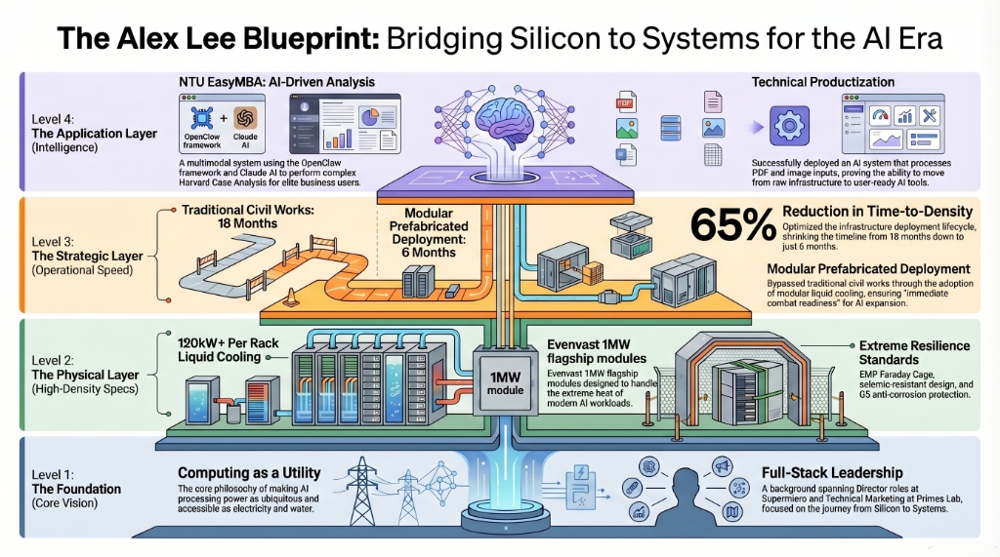

Bridging the Gap Between Infrastructure Scalability and Agentic AI Innovation
Alex Lee is a strategic technology leader with over 15 years of experience across the data center infrastructure and AI software ecosystem. Having served as Director at Supermicro and Head of Technical Marketing at Primes Lab, Alex possesses unique dual-track expertise.
He navigates the full AI stack—from physical GPU constraints to frontier Agentic AI frameworks (OpenClaw), uniquely positioned to drive Google Cloud’s strategy in high-density computing and AI orchestration.

Expert in pre-fabricated liquid-cooled modules with EMP shielding and SCIF isolation for high-security mission-critical loads.
Proven track record at Supermicro enabling NVIDIA GPU-accelerated computing at scale for global hyperscale clients.
Leading the OpenClaw framework development. Transforming LLMs into autonomous workflows, aligning with Vertex AI’s vision.
Founder of the "EMBA Master" AI system for NTU EMBA, bridging C-level leadership with complex technical engineering.
| Focus Area | Achievement | Impact |
|---|---|---|
| Infra Deployment | 1MW Liquid-Cooled Modules | Reduced cycle by 65% (18mo → 6mo) |
| Agentic AI | OpenClaw "EMBA Master" | Adopted by high-level business leaders at NTU |
| AI Infrastructure | Director at Supermicro | Enabled technical adoption for Hyperscale clients |
| Manufacturing | Schneider-validated Assembly | Ensured 100% factory-tested reliability |